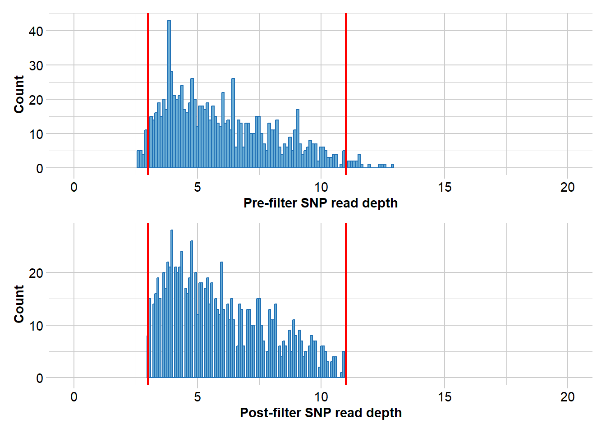

library(dartR.base)
library(dartR.sexlinked)Session 10: Sex-linked markers
Required packages
Dataset 1 - ZW//ZZ - The Yellow Tufted Honeyeater

Load data
data("YTH")Run filter.sex.linked
This function identifies sex-linked and autosomal loci present in a SNP dataset (genlight object) using individuals with known sex. It identifies five types of loci: w-linked or y-linked, sex-biased, z-linked or x-linked, gametologous and autosomal.
The genlight object must contain in gl@other$ind.metrics a column named “id”, and a column named “sex” in which individuals with known-sex are assigned ‘M’ for male, or ‘F’ for female. The function ignores individuals that are assigned anything else or nothing at all (unknown-sex).

NOTE
Set ncores = 1 if you have less than 50,000 SNPs, since it could actually slow down the analysis.
res <- dartR.sexlinked::filter.sex.linked(gl = YTH, system = "zw", plots = TRUE,
ncores = 1)Detected 289 females and 347 males.Starting phase 1. May take a while...Building call rate plots.
Done. Starting phase 2.Building heterozygosity plots.

Done building heterozygosity plots.**FINISHED** Total of analyzed loci: 1000.
Found 46 sex-linked loci:
2 W-linked loci
33 sex-biased loci
10 Z-linked loci
1 ZW gametologs.
And 954 autosomal loci.Run infer.sex
This function uses the output of function filter.sex.linked (list of 6 genlight objects) to infer the sex of all individuals in the dataset. It uses 3 types of sex-linked loci (W-/Y-linked, Z-/X-linked, and gametologs), assigns a preliminary genetic sex for each type of sex-linked loci available, and outputs an agreed sex.
sexID <- dartR.sexlinked::infer.sex(gl_sex_filtered = res, system = "zw",
seed = 124)Not enough gametologs (need at least 5). Assigning NA...***FINISHED***knitr::kable(head(sexID))| id | w.linked.sex | #missing | #called | z.linked.sex | #Hom.z | #Het.z | gametolog.sex | #Hom.g | #Het.g | agreed.sex | |
|---|---|---|---|---|---|---|---|---|---|---|---|
| ANWC46839 | ANWC46839 | F | 2 | 0 | F | 0 | 8 | NA | NA | NA | F |
| W49 | W49 | F | 2 | 0 | F | 0 | 9 | NA | NA | NA | F |
| W90 | W90 | F | 2 | 0 | F | 0 | 9 | NA | NA | NA | F |
| C25 | C25 | M | 0 | 2 | M | 2 | 8 | NA | NA | NA | M |
| C8 | C8 | M | 0 | 2 | M | 3 | 7 | NA | NA | NA | M |
| W70 | W70 | F | 2 | 0 | F | 0 | 10 | NA | NA | NA | F |
IMPORTANT
Any agreed sex with an asterisk* need to manually checked.
Dataset 2 - XX/XY - The Leadbeater’s possum

Load data
data("LBP")Run filter.sex.linked
This function identifies sex-linked and autosomal loci present in a SNP dataset (genlight object) using individuals with known sex. It identifies five types of loci: w-linked or y-linked, sex-biased, z-linked or x-linked, gametologous and autosomal.
The genlight object must contain in gl@other$ind.metrics a column named “id”, and a column named “sex” in which individuals with known-sex are assigned ‘M’ for male, or ‘F’ for female. The function ignores individuals that are assigned anything else or nothing at all (unknown-sex).

res <- dartR.sexlinked::filter.sex.linked(gl = LBP, system = "xy", plots = TRUE,
ncores = 1)Detected 162 females and 211 males.Starting phase 1. May take a while...Building call rate plots.
Done. Starting phase 2.Building heterozygosity plots.

Done building heterozygosity plots.**FINISHED** Total of analyzed loci: 1000.
Found 13 sex-linked loci:
0 Y-linked loci
3 sex-biased loci
9 X-linked loci
1 XY gametologs.
And 987 autosomal loci.Run infer.sex
This function uses the output of function filter.sex.linked (list of 6 genlight objects) to infer the sex of all individuals in the dataset. It uses 3 types of sex-linked loci (W-/Y-linked, Z-/X-linked, and gametologs), assigns a preliminary genetic sex for each type of sex-linked loci available, and outputs an agreed sex.
sexID <- dartR.sexlinked::infer.sex(gl_sex_filtered = res, system = "xy",
seed = 124)Not enough W-linked/Y-linked loci (need at least 1). Assigning NA...Not enough gametologs (need at least 5). Assigning NA...***FINISHED***knitr::kable(head(sexID))| id | y.linked.sex | #called | #missing | x.linked.sex | #Het.x | #Hom.x | gametolog.sex | #Het.g | #Hom.g | agreed.sex | |
|---|---|---|---|---|---|---|---|---|---|---|---|
| Y2 | Y2 | NA | NA | NA | F | 3 | 6 | NA | NA | NA | F |
| Y16 | Y16 | NA | NA | NA | M | 1 | 6 | NA | NA | NA | M |
| Y17 | Y17 | NA | NA | NA | F | 4 | 5 | NA | NA | NA | F |
| Y18 | Y18 | NA | NA | NA | M | 0 | 9 | NA | NA | NA | M |
| Y3 | Y3 | NA | NA | NA | M | 0 | 9 | NA | NA | NA | M |
| Y4 | Y4 | NA | NA | NA | M | 0 | 9 | NA | NA | NA | M |
EXCERCISE
Exercise

Choose one of the following dataset (or your own data) and report:
How many sex-linked markers are present?
How many individuals had a wrong sexID?
Do you see any changes in your PCA/structure analyses before and after filtering the sex-linked markers?
Do you see any differences in genetic diversity and fixation indices between autosomal and sex-linked markers?


Exercise data 1 - Your own data
HINT
You can have a look at the exercise data below for inspiration.
1. Number of sex-linked markers?
2. Individuals with wrong sexID?
3. Changes in PCA before and after removing the SLM?
4. Differences in genetic diversity and fixation indices between autosomal and SLM?
Exercise data 2 - The Eastern Yellow Robin
Data from Robledo-Ruiz et al. 2023.

Load data
data("EYR")
EYR@n.loc
table(EYR@pop)
table(EYR@other$ind.metrics$pop)
table(EYR@other$ind.metrics$sex, useNA = "ifany")[1] 1000
Crusoe Muckleford Timor Wombat
238 421 52 71
Crusoe Muckleford Timor Wombat
238 421 52 71
F M
1 352 429 1. Number of sex-linked markers?
res <- dartR.sexlinked::filter.sex.linked(gl = EYR, system = "zw", plots = TRUE,
ncores = 1)Detected 352 females and 429 males.Starting phase 1. May take a while...Building call rate plots.
Done. Starting phase 2.Building heterozygosity plots.

Done building heterozygosity plots.**FINISHED** Total of analyzed loci: 1000.
Found 84 sex-linked loci:
5 W-linked loci
54 sex-biased loci
18 Z-linked loci
7 ZW gametologs.
And 916 autosomal loci.2. Individuals with wrong sexID?
sexID <- dartR.sexlinked::infer.sex(gl_sex_filtered = res, system = "zw",
seed = 124)***FINISHED***knitr::kable(head(sexID))
agreed.sex <- sub(pattern = "\\*", replacement = "", x = sexID$agreed.sex) # remove asterisk
sum(EYR$other$ind.metrics$sex != agreed.sex, na.rm = TRUE)| id | w.linked.sex | #missing | #called | z.linked.sex | #Hom.z | #Het.z | gametolog.sex | #Hom.g | #Het.g | agreed.sex | |
|---|---|---|---|---|---|---|---|---|---|---|---|
| 024-96401 | 024-96401 | M | 0 | 5 | M | 5 | 13 | M | 0 | 4 | M |
| 024-96401b | 024-96401b | M | 0 | 5 | M | 5 | 12 | M | 0 | 4 | M |
| 024-96402 | 024-96402 | F | 5 | 0 | F | 0 | 15 | F | 3 | 2 | F |
| 024-96403 | 024-96403 | M | 0 | 5 | M | 6 | 12 | M | 0 | 5 | M |
| 024-96404 | 024-96404 | M | 0 | 5 | M | 7 | 11 | M | 0 | 5 | M |
| 024-96405 | 024-96405 | M | 1 | 4 | M | 4 | 14 | M | 0 | 5 | M |
[1] 11
Exercise

Can you check if any misidentified sexes are due to uncertain genetic sexID (indicated with *)?
HINT Try using grep(pattern = "\\*", x = sexID$agreed.sex)
3. Changes in PCA before and after removing the SLM?
PCA before
PCA.before <- dartR.base::gl.pcoa(EYR, verbose = 0)
dartR.base::gl.pcoa.plot(PCA.before, EYR, xaxis = 1, yaxis = 2)
dartR.base::gl.pcoa.plot(PCA.before, EYR, xaxis = 2, yaxis = 3)
Starting gl.colors
Selected color type 2
Completed: gl.colors
Starting ::
Starting dartR.base
Starting gl.pcoa.plot
Processing an ordination file (glPca)
Processing genlight object with SNP data
Plotting populations in a space defined by the SNPs
Preparing plot .... please wait
Completed: ::
Completed: dartR.base
Completed: gl.pcoa.plot
Starting ::
Starting dartR.base
Starting gl.pcoa.plot
Processing an ordination file (glPca)
Processing genlight object with SNP data
Plotting populations in a space defined by the SNPs
Preparing plot .... please wait
Completed: ::
Completed: dartR.base
Completed: gl.pcoa.plot Filtering
EYR.after <- res$autosomal
dartR.base::gl.report.rdepth(EYR.after)Starting ::
Starting dartR.base
Starting gl.report.rdepth
Processing genlight object with SNP data
Reporting Read Depth by Locus
No. of loci = 916
No. of individuals = 782
Minimum : 2.6
1st quartile : 4.2
Median : 5.6
Mean : 6.023253
3r quartile : 7.5
Maximum : 12.9
Missing Rate Overall: 0.18 
Quantile Threshold Retained Percent Filtered Percent
1 100% 12.9 1 0.1 915 99.9
2 95% 10.1 50 5.5 866 94.5
3 90% 9.3 93 10.2 823 89.8
4 85% 8.7 141 15.4 775 84.6
5 80% 8.1 185 20.2 731 79.8
6 75% 7.5 241 26.3 675 73.7
7 70% 7.1 285 31.1 631 68.9
8 65% 6.7 329 35.9 587 64.1
9 60% 6.2 379 41.4 537 58.6
10 55% 6.0 413 45.1 503 54.9
11 50% 5.6 465 50.8 451 49.2
12 45% 5.3 510 55.7 406 44.3
13 40% 5.0 551 60.2 365 39.8
14 35% 4.7 604 65.9 312 34.1
15 30% 4.4 657 71.7 259 28.3
16 25% 4.2 694 75.8 222 24.2
17 20% 4.0 738 80.6 178 19.4
18 15% 3.8 779 85.0 137 15.0
19 10% 3.5 827 90.3 89 9.7
20 5% 3.2 872 95.2 44 4.8
21 0% 2.6 916 100.0 0 0.0
Completed: ::
Completed: dartR.base
Completed: gl.report.rdepth EYR.after <- dartR.base::gl.filter.rdepth(EYR.after, lower = 3, upper = 11,
verbose = 0)
dartR.base::gl.report.callrate(EYR.after, method = "loc")Starting ::
Starting dartR.base
Starting gl.report.callrate
Processing genlight object with SNP data
Reporting Call Rate by Locus
No. of loci = 874
No. of individuals = 782
Minimum : 0.213555
1st quartile : 0.7317778
Median : 0.890026
Mean : 0.8179257
3r quartile : 0.9523655
Maximum : 0.98977
Missing Rate Overall: 0.1821 Completed: ::
Completed: dartR.base
Completed: gl.report.callrate EYR.after <- dartR.base::gl.filter.callrate(EYR, method = "loc", threshold = 0.75,
verbose = 0)
dartR.base::gl.report.callrate(EYR, method = "ind")Starting ::
Starting dartR.base
Starting gl.report.callrate
Processing genlight object with SNP data
Reporting Call Rate by Individual
No. of loci = 1000
No. of individuals = 782
Minimum : 0.03
1st quartile : 0.814
Median : 0.8435
Mean : 0.8136471
3r quartile : 0.86
Maximum : 0.906
Missing Rate Overall: 0.1864
Listing 4 populations and their average CallRates
Monitor again after filtering
Population CallRate N
1 Crusoe 0.8054 238
2 Muckleford 0.8107 421
3 Timor 0.8440 52
4 Wombat 0.8368 71
Listing 20 individuals with the lowest CallRates
Use this list to see which individuals will be lost on filtering by individual
Set ind.to.list parameter to see more individuals
Individual CallRate
1 M18.29.1 0.030
2 M18.18.1 0.038
3 M18.47.2 0.055
4 027-34168 0.082
5 C18.21.2 0.083
6 C18.15.2 0.084
7 C18.16.1 0.089
8 M18.47.3 0.097
9 M18.35.2 0.134
10 M18.20.3 0.230
11 C18.28.1 0.360
12 M20.70.2 0.364
13 C18.17.2 0.390
14 C18.14.1 0.419
15 M20.70.3 0.440
16 M20.110.1 0.444
17 027-34065 0.447
18 M19.8.1 0.458
19 M20.64.3 0.483
20 M19.12.1 0.498
)Completed: ::
Completed: dartR.base
Completed: gl.report.callrate EYR.after <- dartR.base::gl.filter.callrate(EYR.after, method = "ind", threshold = 0.65,
verbose = 0)dartR.base::gl.report.maf(EYR.after)Starting ::
Starting dartR.base
Starting gl.report.maf
Processing genlight object with SNP data
Starting ::
Starting dartR.base
Starting gl.report.maf
Reporting Minor Allele Frequency (MAF) by Locus for population Crusoe
No. of loci = 685
No. of individuals = 231
Minimum : 0.0022
1st quantile : 0.0667
Median : 0.1471
Mean : 0.1823488
3r quantile : 0.2822
Maximum : 0.5
Missing Rate Overall: 0.08
Reporting Minor Allele Frequency (MAF) by Locus for population Muckleford
No. of loci = 693
No. of individuals = 406
Minimum : 0.0012
1st quantile : 0.0593
Median : 0.1426
Mean : 0.1774444
3r quantile : 0.2762
Maximum : 0.4987
Missing Rate Overall: 0.07
Reporting Minor Allele Frequency (MAF) by Locus for population Timor
No. of loci = 603
No. of individuals = 52
Minimum : 0.0096
1st quantile : 0.0673
Median : 0.1667
Mean : 0.1952375
3r quantile : 0.305
Maximum : 0.5
Missing Rate Overall: 0.06
Reporting Minor Allele Frequency (MAF) by Locus for population Wombat
No. of loci = 641
No. of individuals = 71
Minimum : 0.007
1st quantile : 0.0643
Median : 0.1479
Mean : 0.1821835
3r quantile : 0.2803
Maximum : 0.5
Missing Rate Overall: 0.06
Reporting Minor Allele Frequency (MAF) by Locus OVERALL
No. of loci = 715
No. of individuals = 760
Minimum : 3e-04
1st quantile : 0.0606
Median : 0.1383
Mean : 0.1742244
3r quantile : 0.272375
Maximum : 0.4954
Missing Rate Overall: 0.07 Quantile Threshold Retained Percent Filtered Percent
1 100% 0.4954 1 0.1 709 99.9
2 95% 0.4452 36 5.1 674 94.9
3 90% 0.3799 72 10.1 638 89.9
4 85% 0.3485 107 15.1 603 84.9
5 80% 0.3092 143 20.1 567 79.9
6 75% 0.2728 178 25.1 532 74.9
7 70% 0.2371 213 30.0 497 70.0
8 65% 0.2108 249 35.1 461 64.9
9 60% 0.1902 284 40.0 426 60.0
10 55% 0.1585 320 45.1 390 54.9
11 50% 0.1379 356 50.1 354 49.9
12 45% 0.1218 391 55.1 319 44.9
13 40% 0.1018 427 60.1 283 39.9
14 35% 0.0852 462 65.1 248 34.9
15 30% 0.0722 497 70.0 213 30.0
16 25% 0.0603 533 75.1 177 24.9
17 20% 0.0488 569 80.1 141 19.9
18 15% 0.0348 605 85.2 105 14.8
19 10% 0.0210 640 90.1 70 9.9
20 5% 0.0073 675 95.1 35 4.9
21 0% 0.0003 710 100.0 0 0.0
Completed: ::
Completed: dartR.base
Completed: gl.report.maf EYR.after <- dartR.base::gl.filter.maf(EYR.after, threshold = 0.05, verbose = 0)Starting gl.select.colors
Warning: Number of required colors not specified, set to 9
Library: RColorBrewer
Palette: brewer.pal
Showing and returning 2 of 9 colors for library RColorBrewer : palette Blues 
Completed: gl.select.colors PCA after
PCA.after <- dartR.base::gl.pcoa(EYR.after, verbose = 0)
dartR.base::gl.pcoa.plot(PCA.after, EYR.after, xaxis = 1, yaxis = 2)
dartR.base::gl.pcoa.plot(PCA.after, EYR.after, xaxis = 2, yaxis = 3)
Starting gl.colors
Selected color type 2
Completed: gl.colors
Starting ::
Starting dartR.base
Starting gl.pcoa.plot
Processing an ordination file (glPca)
Processing genlight object with SNP data
Plotting populations in a space defined by the SNPs
Preparing plot .... please wait
Completed: ::
Completed: dartR.base
Completed: gl.pcoa.plot
Starting ::
Starting dartR.base
Starting gl.pcoa.plot
Processing an ordination file (glPca)
Processing genlight object with SNP data
Plotting populations in a space defined by the SNPs
Preparing plot .... please wait
Completed: ::
Completed: dartR.base
Completed: gl.pcoa.plot 4. Differences in genetic diversity and fixation indices between autosomal and SLM?
autosomal <- res$autosomal
z.linked <- res$z.linked
z.linked.F <- z.linked[z.linked$other$ind.metrics$sex == "F", ]
z.linked.M <- z.linked[z.linked$other$ind.metrics$sex == "M", ]
# Genetic diversity
basic.autosomal <- dartR.base::utils.basic.stats(autosomal)
basic.autosomal$overall Ho Hs Ht Dst Htp Dstp Fst Fstp Fis Dest
0.1355 0.2410 0.2520 0.0110 0.2551 0.0189 0.0438 0.0739 0.4376 0.0331
Gst_max Gst_H
0.7111 0.1040 basic.xF <- dartR.base::utils.basic.stats(z.linked.F)
basic.xF$overall Ho Hs Ht Dst Htp Dstp Fst Fstp Fis Dest
0.0100 0.2932 0.3052 0.0120 0.3135 0.0271 0.0393 0.0863 0.9660 0.0510
Gst_max Gst_H
0.6504 0.1327 basic.xM <- dartR.base::utils.basic.stats(z.linked.M)
basic.xM$overall Ho Hs Ht Dst Htp Dstp Fst Fstp Fis Dest
0.2728 0.2990 0.3144 0.0154 0.3189 0.0265 0.0488 0.0830 0.0877 0.0504
Gst_max Gst_H
0.6427 0.1292 divers.auto <- dartR.base::gl.report.diversity(autosomal, pbar = FALSE, table = FALSE,
verbose = 0) Processing genlight object with SNP data
divers.auto$one_H_alpha Crusoe Muckleford Timor Wombat
0.3910761 0.3836705 0.3542339 0.3559755 divers.auto$one_H_beta Crusoe Muckleford Timor Wombat
Crusoe NA 0.03019970 0.09333132 0.06916599
Muckleford 0.007742379 NA 0.07641763 0.07214191
Timor 0.022460636 0.02616347 NA 0.09763661
Wombat 0.021589876 0.02529271 0.04001097 NAdivers.zF <- dartR.base::gl.report.diversity(z.linked.F, pbar = FALSE, table = FALSE,
verbose = 0) Processing genlight object with SNP data
divers.zF$one_H_alpha Crusoe Muckleford Timor Wombat
0.4167639 0.4723732 0.4184110 0.4361303 divers.zF$one_H_beta Crusoe Muckleford Timor Wombat
Crusoe NA 0.03446323 0.11220964 0.08327249
Muckleford 0.02584944 NA 0.08811518 0.08998365
Timor 0.05283054 0.02502589 NA 0.13788524
Wombat 0.04397087 0.01616622 0.04314732 NAdivers.zM <- dartR.base::gl.report.diversity(z.linked.M, pbar = FALSE, table = FALSE,
verbose = 0) Processing genlight object with SNP data
divers.zM$one_H_alpha Crusoe Muckleford Timor Wombat
0.4145752 0.4829218 0.4104935 0.5072501 divers.zM$one_H_beta Crusoe Muckleford Timor Wombat
Crusoe NA 0.04140262 0.11809375 0.05640494
Muckleford 0.03238801 NA 0.06872601 0.07601926
Timor 0.06860214 0.03442884 NA 0.10644965
Wombat 0.02022387 -0.01394943 0.02226470 NA# Fixation indices
dartR.base::gl.fst.pop(autosomal, verbose = 0) Crusoe Muckleford Timor Wombat
Crusoe NA NA NA NA
Muckleford 0.03587265 NA NA NA
Timor 0.05609908 0.06554101 NA NA
Wombat 0.06413794 0.03500894 0.1013107 NAdartR.base::gl.fst.pop(z.linked.F, verbose = 0) Crusoe Muckleford Timor Wombat
Crusoe NA NA NA NA
Muckleford 0.04723621 NA NA NA
Timor 0.08604706 0.07861258 NA NA
Wombat 0.09469558 0.03570803 0.01753615 NAdartR.base::gl.fst.pop(z.linked.M, verbose = 0) Crusoe Muckleford Timor Wombat
Crusoe NA NA NA NA
Muckleford 0.05611450 NA NA NA
Timor 0.06094081 0.08315729 NA NA
Wombat 0.09146032 0.01952923 0.08577174 NAdartR.base::gl.report.fstat(autosomal, verbose = 0) Your plot was not shown in full because your 'Plots' pane
is too small. Increase the size of the 'Plots' pane and run the
function again. Alternatively, use the parameter 'plot.file' to
save the plot to a file.$Stat_matrices
$Stat_matrices$Fst
Crusoe Muckleford Timor Wombat
Crusoe NA 0.0165 0.0242 0.0295
Muckleford 0.0165 NA 0.0292 0.0142
Timor 0.0242 0.0292 NA 0.0455
Wombat 0.0295 0.0142 0.0455 NA
$Stat_matrices$Fstp
Crusoe Muckleford Timor Wombat
Crusoe NA 0.0407 0.0742 0.0795
Muckleford 0.0407 NA 0.0834 0.0474
Timor 0.0742 0.0834 NA 0.1271
Wombat 0.0795 0.0474 0.1271 NA
$Stat_matrices$Dest
Crusoe Muckleford Timor Wombat
Crusoe NA 0.0276 0.0496 0.0528
Muckleford 0.0276 NA 0.0550 0.0304
Timor 0.0496 0.0550 NA 0.0823
Wombat 0.0528 0.0304 0.0823 NA
$Stat_matrices$Gst_H
Crusoe Muckleford Timor Wombat
Crusoe NA 0.0648 0.1165 0.1247
Muckleford 0.0648 NA 0.1301 0.0736
Timor 0.1165 0.1301 NA 0.1954
Wombat 0.1247 0.0736 0.1954 NA
[[2]]
Stat_tables.Crusoe_vs_Muckleford Stat_tables.Crusoe_vs_Timor
Fst 0.0165 0.0242
Fstp 0.0407 0.0742
Dest 0.0276 0.0496
Gst_H 0.0648 0.1165
Stat_tables.Crusoe_vs_Wombat Stat_tables.Muckleford_vs_Timor
Fst 0.0295 0.0292
Fstp 0.0795 0.0834
Dest 0.0528 0.0550
Gst_H 0.1247 0.1301
Stat_tables.Muckleford_vs_Wombat Stat_tables.Timor_vs_Wombat
Fst 0.0142 0.0455
Fstp 0.0474 0.1271
Dest 0.0304 0.0823
Gst_H 0.0736 0.1954dartR.base::gl.report.fstat(z.linked.F, verbose = 0) Your plot was not shown in full because your 'Plots' pane
is too small. Increase the size of the 'Plots' pane and run the
function again. Alternatively, use the parameter 'plot.file' to
save the plot to a file.$Stat_matrices
$Stat_matrices$Fst
Crusoe Muckleford Timor Wombat
Crusoe NA 0.0211 0.0313 0.0334
Muckleford 0.0211 NA 0.0304 0.0043
Timor 0.0313 0.0304 NA -0.0154
Wombat 0.0334 0.0043 -0.0154 NA
$Stat_matrices$Fstp
Crusoe Muckleford Timor Wombat
Crusoe NA 0.0567 0.1126 0.1234
Muckleford 0.0567 NA 0.1070 0.0644
Timor 0.1126 0.1070 NA 0.0648
Wombat 0.1234 0.0644 0.0648 NA
$Stat_matrices$Dest
Crusoe Muckleford Timor Wombat
Crusoe NA 0.0476 0.0938 0.1058
Muckleford 0.0476 NA 0.0967 0.0582
Timor 0.0938 0.0967 NA 0.0566
Wombat 0.1058 0.0582 0.0566 NA
$Stat_matrices$Gst_H
Crusoe Muckleford Timor Wombat
Crusoe NA 0.0997 0.1918 0.2141
Muckleford 0.0997 NA 0.1919 0.1169
Timor 0.1918 0.1919 NA 0.1140
Wombat 0.2141 0.1169 0.1140 NA
[[2]]
Stat_tables.Crusoe_vs_Muckleford Stat_tables.Crusoe_vs_Timor
Fst 0.0211 0.0313
Fstp 0.0567 0.1126
Dest 0.0476 0.0938
Gst_H 0.0997 0.1918
Stat_tables.Crusoe_vs_Wombat Stat_tables.Muckleford_vs_Timor
Fst 0.0334 0.0304
Fstp 0.1234 0.1070
Dest 0.1058 0.0967
Gst_H 0.2141 0.1919
Stat_tables.Muckleford_vs_Wombat Stat_tables.Timor_vs_Wombat
Fst 0.0043 -0.0154
Fstp 0.0644 0.0648
Dest 0.0582 0.0566
Gst_H 0.1169 0.1140dartR.base::gl.report.fstat(z.linked.F, verbose = 0) Your plot was not shown in full because your 'Plots' pane
is too small. Increase the size of the 'Plots' pane and run the
function again. Alternatively, use the parameter 'plot.file' to
save the plot to a file.$Stat_matrices
$Stat_matrices$Fst
Crusoe Muckleford Timor Wombat
Crusoe NA 0.0211 0.0313 0.0334
Muckleford 0.0211 NA 0.0304 0.0043
Timor 0.0313 0.0304 NA -0.0154
Wombat 0.0334 0.0043 -0.0154 NA
$Stat_matrices$Fstp
Crusoe Muckleford Timor Wombat
Crusoe NA 0.0567 0.1126 0.1234
Muckleford 0.0567 NA 0.1070 0.0644
Timor 0.1126 0.1070 NA 0.0648
Wombat 0.1234 0.0644 0.0648 NA
$Stat_matrices$Dest
Crusoe Muckleford Timor Wombat
Crusoe NA 0.0476 0.0938 0.1058
Muckleford 0.0476 NA 0.0967 0.0582
Timor 0.0938 0.0967 NA 0.0566
Wombat 0.1058 0.0582 0.0566 NA
$Stat_matrices$Gst_H
Crusoe Muckleford Timor Wombat
Crusoe NA 0.0997 0.1918 0.2141
Muckleford 0.0997 NA 0.1919 0.1169
Timor 0.1918 0.1919 NA 0.1140
Wombat 0.2141 0.1169 0.1140 NA
[[2]]
Stat_tables.Crusoe_vs_Muckleford Stat_tables.Crusoe_vs_Timor
Fst 0.0211 0.0313
Fstp 0.0567 0.1126
Dest 0.0476 0.0938
Gst_H 0.0997 0.1918
Stat_tables.Crusoe_vs_Wombat Stat_tables.Muckleford_vs_Timor
Fst 0.0334 0.0304
Fstp 0.1234 0.1070
Dest 0.1058 0.0967
Gst_H 0.2141 0.1919
Stat_tables.Muckleford_vs_Wombat Stat_tables.Timor_vs_Wombat
Fst 0.0043 -0.0154
Fstp 0.0644 0.0648
Dest 0.0582 0.0566
Gst_H 0.1169 0.1140Exercise data 3 - Bull shark
Data from Devloo-Delva et al. 2023.
Load data
print(load("data/Bull_shark_DArTseq_genlight_for_sex-linked_markers.Rdata"))[1] "data.gl"data.gl@n.loc[1] 93202table(data.gl@pop)
E-ATL E-IO Fiji Japan N-IO W-ATL W-IO W-PAC
2 36 8 14 20 36 40 26 table(data.gl@other$ind.metrics$pop)
E-ATL E-IO Fiji Japan N-IO W-ATL W-IO W-PAC
2 36 8 14 20 36 40 26 table(data.gl@other$ind.metrics$sex, useNA = "ifany")
F M <NA>
85 64 33 1. Number of sex-linked markers?
res <- dartR.sexlinked::filter.sex.linked(gl = data.gl, system = "xy", plots = TRUE,
ncores = 1)Detected 85 females and 64 males.Starting phase 1. May take a while...Building call rate plots.
Done. Starting phase 2.Building heterozygosity plots.Done building heterozygosity plots.**FINISHED** Total of analyzed loci: 93202.
Found 9 sex-linked loci:
2 Y-linked loci
2 sex-biased loci
4 X-linked loci
1 XY gametologs.
And 93193 autosomal loci.
2. Individuals with wrong sexID?
sexID <- dartR.sexlinked::infer.sex(gl_sex_filtered = res, system = "xy",
seed = 124)Not enough gametologs (need at least 5). Assigning NA...***FINISHED***knitr::kable(head(sexID))
agreed.sex <- sub(pattern = "\\*", replacement = "", x = sexID$agreed.sex) # remove asterisk
sum(data.gl$other$ind.metrics$sex != agreed.sex, na.rm = TRUE)| id | y.linked.sex | #called | #missing | x.linked.sex | #Het.x | #Hom.x | gametolog.sex | #Het.g | #Hom.g | agreed.sex | |
|---|---|---|---|---|---|---|---|---|---|---|---|
| CL-FIJ002-F | CL-FIJ002-F | F | 0 | 2 | F | 4 | 0 | NA | NA | NA | F |
| CL-FIJ003-M | CL-FIJ003-M | M | 2 | 0 | M | 0 | 4 | NA | NA | NA | M |
| CL-FIJ008-F | CL-FIJ008-F | F | 0 | 2 | F | 2 | 2 | NA | NA | NA | F |
| CL-FIJ010-F | CL-FIJ010-F | F | 0 | 2 | F | 3 | 1 | NA | NA | NA | F |
| CL-FIJ015-F | CL-FIJ015-F | F | 0 | 2 | F | 4 | 0 | NA | NA | NA | F |
| CL-FIJ018-F | CL-FIJ018-F | F | 0 | 2 | F | 3 | 1 | NA | NA | NA | F |
[1] 8Exercise data 4 - Blue shark
Data from Nikolic et al. 2023.
Load data
print(load("data/Blue_shark_DArTseq_genlight_for_sex-linked_markers.Rdata"))[1] "data.gl"data.gl@n.loc[1] 172384table(data.gl@pop)
EIO MED1 MED2 NATL NEATL NIO NPAC SAF1 SAF2 SWPAC1 SWPAC2
8 34 20 49 26 27 4 21 89 30 16
SWPAC3 WIO
11 29 table(data.gl@other$ind.metrics$pop)
EIO MED1 MED2 NATL NEATL NIO NPAC SAF1 SAF2 SWPAC1 SWPAC2
8 34 20 49 26 27 4 21 89 30 16
SWPAC3 WIO
11 29 table(data.gl@other$ind.metrics$sex, useNA = "ifany")
F M <NA>
104 111 149 1. Number of sex-linked markers?
res <- dartR.sexlinked::filter.sex.linked(gl = data.gl, system = "xy", plots = TRUE,
ncores = 1)Detected 85 females and 64 males.Starting phase 1. May take a while...Building call rate plots.
Done. Starting phase 2.Building heterozygosity plots.

Done building heterozygosity plots.**FINISHED** Total of analyzed loci: 93202.
Found 9 sex-linked loci:
2 Y-linked loci
2 sex-biased loci
4 X-linked loci
1 XY gametologs.
And 93193 autosomal loci.2. Individuals with wrong sexID?
sexID <- dartR.sexlinked::infer.sex(gl_sex_filtered = res, system = "xy",
seed = 124)Not enough gametologs (need at least 5). Assigning NA...***FINISHED***knitr::kable(head(sexID))
agreed.sex <- sub(pattern = "\\*", replacement = "", x = sexID$agreed.sex) # remove asterisk
sum(data.gl$other$ind.metrics$sex != agreed.sex, na.rm = TRUE)| id | y.linked.sex | #called | #missing | x.linked.sex | #Het.x | #Hom.x | gametolog.sex | #Het.g | #Hom.g | agreed.sex | |
|---|---|---|---|---|---|---|---|---|---|---|---|
| 60088 | 60088 | M | 2 | 0 | M | 0 | 22 | NA | NA | NA | M |
| 60160 | 60160 | M | 2 | 0 | M | 0 | 21 | NA | NA | NA | M |
| 60168 | 60168 | M | 2 | 0 | M | 0 | 22 | NA | NA | NA | M |
| 60176 | 60176 | M | 2 | 0 | M | 0 | 21 | NA | NA | NA | M |
| 60096 | 60096 | M | 2 | 0 | M | 0 | 22 | NA | NA | NA | M |
| 60104 | 60104 | M | 2 | 0 | M | 1 | 19 | NA | NA | NA | M |
[1] 22References
Devloo-Delva, F., Burridge, C. P., Kyne, P. M., Brunnschweiler, J. M., Chapman, D. D., Charvet, P., … & Feutry, P. (2023). From rivers to ocean basins: The role of ocean barriers and philopatry in the genetic structuring of a cosmopolitan coastal predator. Ecology and Evolution, 13(2), e9837. https://doi.org/10.1002/ece3.9837
Nikolic, N., Devloo-Delva, F., Bailleul, D., Noskova, E., Rougeux, C., Delord, C., … & Arnaud‐Haond, S. (2023). Stepping up to genome scan allows stock differentiation in the worldwide distributed blue shark Prionace glauca. Molecular Ecology, 32(5), 1000-1019. https://doi.org/10.1111/mec.16822
Robledo-Ruiz, D. A., Austin, L., Amos, J. N., Castrejón-Figueroa, J., Harley, D. K. P., Magrath, M. J. L., Sunnucks, P., & Pavlova, A. (2023). Easy-to-use R functions to separate reduced-representation genomic datasets into sex-linked and autosomal loci, and conduct sex assignment. Molecular Ecology Resources, 00, 1–21. https://doi.org/10.1111/1755-0998.13844